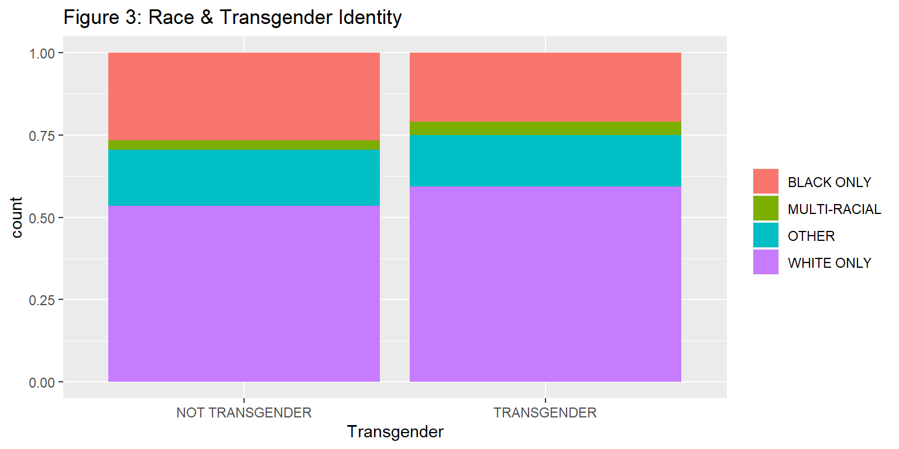
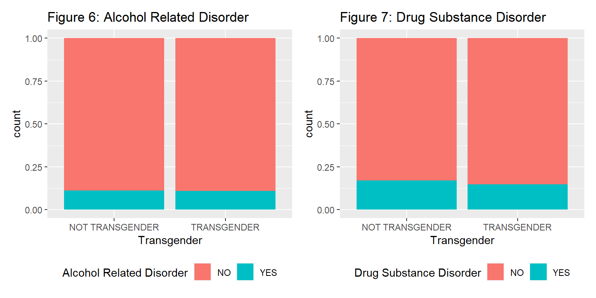
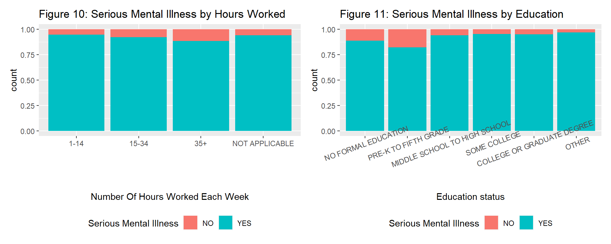
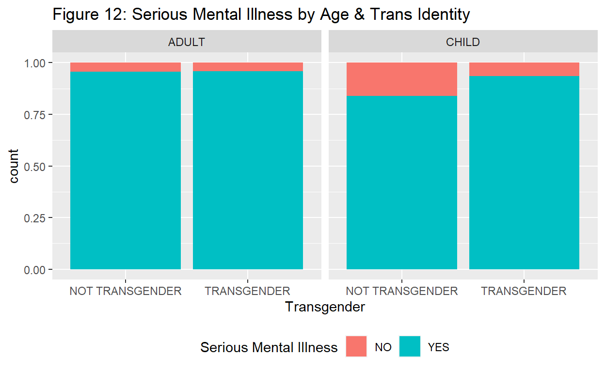
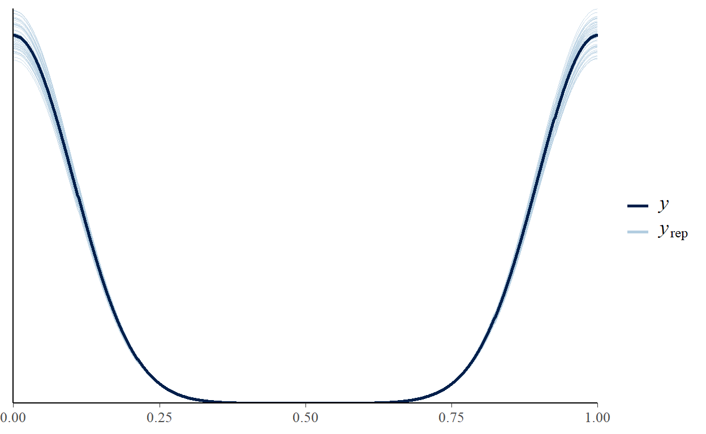

Bayesian Statistics
There are well documented disparities in mental health outcomes between transgender people and their cisgender (ie not transgender) peers (Goldenberg et al. 2019; McDowell, Hughto, & Reisner, 2019; Flores et al., 2018; Bailey, Ellis, & McNeil, 2014; Haas, Rodgers, & Herman, 2014). Bailey, Ellis, & McNeil (2014) found 84% prevalence of suicidal ideation and 48% prevalence of suicide attempt history among trans people. This suicide attempt rate is more than ten times the national average of 4.6% (Haas, Rodgers, & Herman, 2014). The disparities are especially large for transgender people of color (TPOC) (Goldenberg et al. 2019; Flores et al., 2018; Haas, Rodgers, & Herman, 2014). Hass, Rodgers, & Herman (2014) found that white trans people surveyed had the lowest suicide attempt rate of any racial group at 38%, while the suicide attempt rate for TPOC ranged from 39% (Asian American) to 44% (Hispanic/Latino) to 45% (Black) to 54% (multiracial) to 56% (Native American). This may be related to the fact that TPOC are at much higher risk of violence (including harassment, physical, sexual, and intimate partner) than white trans people (Flores et al., 2018).
Because of this we thought it would be important to look for protective factors against poor mental health outcomes, in particular for trans people, and especially TPOC. McDowell, Hughto, & Reisner (2019) asked a similar question and found that lack of employment, lower income and education level, daily discrimination, and violence were all significant risk factors for mental illness among trans people. These could potentially point to places for short term intervention in a transphobic world resistant to (much needed) radical change.
However, we were limited by the small number of publicly available data sets that collect information about transgender identity. We ended up using data from the 2017 Patient Characteristics Study (PCS), conducted by the New York State Office of Mental Health to better understand and reform the public mental health system. The PCS collects information about every client receiving public mental health services in the state of New York for a one week period, every 2 years. In 2017 there were 175,926 patients recorded, 1,844 of which identified as themselves as transgender. You can learn more about the study here: https://omh.ny.gov/omhweb/pcs/submissions/. We downloaded the data from https://catalog.data.gov/dataset/patient-characteristics-survey-pcs-2017.
One major limitation of this data set is because everyone included in it is receiving public mental health services, it is not representative of the general population. Another limitation is lack of diversity of mental health outcome measures, including only “mental illness”, “serious mental illness”, “drug substance disorder”, and “alcohol related disorder” but excluding outcomes like suicide attempts, self injury, or specific diagnoses. Our initial research question asked what factors are associated with better mental health outcomes for trans people, i.e. what mediates or moderates the relationship between trans identity and poor mental health? However, unlike the trends found in the general population, in this population being transgender was not significantly related to any measured mental health outcome. Thus, we shifted our focus to ask what broader factors predict serious mental illness, such as race, employment, age, sexual orientation, and education.
data.frame(variable = c("Transgender", "Mental Illness", "Race", "Hispanic Ethnicity", "Sexual Orientation", "Age Group", "Serious Mental Illness", "Alcohol Related Disorder", "Drug Substance Disorder", "Education Status", "Number Of Hours Worked Each Week"), meaning = c("YES or NO", "YES or NO", "WHITE ONLY, BLACK ONLY, MULTI-RACIAL, or OTHER", "YES or NO", "BISEXUAL, LESBIAN/GAY, STRAIGHT/HETEROSEXUAL, or OTHER", "ADULT or CHILD", "YES or NO", "YES or NO", "YES or NO", "COLLEGE OR GRADUATE DEGREE, MIDDLE SCHOOL TO HIGH SCHOOL, NO FORMAL EDUCATION, OTHER, PRE-K TO FIFTH GRADE, SOME COLLEGE", "01-14 HOURS, 15-34 HOURS, 35 HOURS OR MORE, or NOT APPLICABLE")) %>%
kbl() %>%
kable_styling(position = "center")
| variable | meaning |
|---|---|
| Transgender | YES or NO |
| Mental Illness | YES or NO |
| Race | WHITE ONLY, BLACK ONLY, MULTI-RACIAL, or OTHER |
| Hispanic Ethnicity | YES or NO |
| Sexual Orientation | BISEXUAL, LESBIAN/GAY, STRAIGHT/HETEROSEXUAL, or OTHER |
| Age Group | ADULT or CHILD |
| Serious Mental Illness | YES or NO |
| Alcohol Related Disorder | YES or NO |
| Drug Substance Disorder | YES or NO |
| Education Status | COLLEGE OR GRADUATE DEGREE, MIDDLE SCHOOL TO HIGH SCHOOL, NO FORMAL EDUCATION, OTHER, PRE-K TO FIFTH GRADE, SOME COLLEGE |
| Number Of Hours Worked Each Week | 01-14 HOURS, 15-34 HOURS, 35 HOURS OR MORE, or NOT APPLICABLE |
# cleaning the data!
survey_cleaned <- survey %>%
filter(Transgender == "NO, NOT TRANSGENDER" | Transgender == "YES, TRANSGENDER") %>%
filter(Race == "WHITE ONLY" | Race == "BLACK ONLY" | Race == "MULTI-RACIAL" | Race == "OTHER") %>%
filter(`Alcohol Related Disorder` == "YES" | `Alcohol Related Disorder` == "NO") %>%
filter(`Drug Substance Disorder` == "YES" | `Drug Substance Disorder` == "NO") %>%
filter(`Education Status` != "UNKNOWN") %>%
filter(`Hispanic Ethnicity` != "UNKNOWN") %>%
filter(`Number Of Hours Worked Each Week` != "UNKNOWN EMPLOYMENT HOURS") %>%
filter(`Mental Illness` != "UNKNOWN") %>%
filter(`Age Group` != "UNKNOWN") %>%
filter(`Serious Mental Illness` != "UNKNOWN") %>%
filter(`Sexual Orientation` != "CLIENT DID NOT ANSWER") %>%
filter(`Sexual Orientation` != "UNKNOWN") %>%
mutate(`Number Of Hours Worked Each Week` = fct_recode(`Number Of Hours Worked Each Week`, "1-14" = "01-14 HOURS",
"15-34" = "15-34 HOURS", "35+" = "35 HOURS OR MORE")) %>%
mutate(Transgender = fct_recode(Transgender, "NOT TRANSGENDER" = "NO, NOT TRANSGENDER",
"TRANSGENDER" = "YES, TRANSGENDER")) %>%
mutate(`Hispanic Ethnicity` = fct_recode(`Hispanic Ethnicity`, "NOT HISPANIC/LATINO" = "NO, NOT HISPANIC/LATINO", "HISPANIC/LATINO" = "YES, HISPANIC/LATINO"))
We removed unknown/not answered values for each variable.
In our to get a sense of our data we first look at the two most basic demographic features we decided to focus on: transgender identity and race.
p3 <- survey_cleaned %>%
ggplot()+
geom_bar(aes(x = Transgender, fill = Transgender))+
labs(title = "Figure 1: Transgender Identity")+
theme(legend.position = "bottom", legend.title = element_blank())
p4 <- survey_cleaned %>%
ggplot()+
geom_bar(aes(x = Race, fill = `Hispanic Ethnicity`))+
labs(title = "Figure 2: Race & Ethnicity")+
theme(axis.text.x = element_text(angle=20), legend.position = "bottom", legend.title = element_blank())
p5 <- survey_cleaned %>%
ggplot(aes(x = Transgender, fill = Race)) +
labs(title = "Figure 3: Race & Transgender Identity")+
geom_bar(position = "fill")+
theme(legend.title = element_blank())
p3 | p4
p5

After cleaning we still see that the majority of patients are not transgender (figure 1).
This survey collected information on race (“Black only”, “white only”, “multiracial”, or “other”) and ethnicity (“Hispanic/Latino” or not) separately. We can see that the sample has about twice as many “white only” respondents as “Black only” respondents. We also see that there are respondents identified as “Hispanic/Latino” in all four racial categories collected, with the highest number in the category “other” (figure 2).
Additionally, we can see that a slightly higher percentage of transgender patients were “white only”, compared to patients who are not transgender (figure 3). Just over 50% of both groups were “white only”, and around 25% were “Black only” (figure 3).
Next, we looked for any easily visible differences in mental health outcomes by transgender identity in this population.
p6 <- survey_cleaned %>%
ggplot(aes(x = Transgender, fill = `Alcohol Related Disorder`)) +
geom_bar(position = "fill")+
labs(title = "Figure 6: Alcohol Related Disorder")+
theme(legend.position = "bottom")
p7 <- survey_cleaned %>%
ggplot(aes(x = Transgender, fill = `Drug Substance Disorder`)) +
geom_bar(position = "fill")+
labs(title = "Figure 7: Drug Substance Disorder")+
theme(legend.position = "bottom")
p8 <- survey_cleaned %>%
ggplot(aes(x = `Transgender`, fill = as.factor(`Serious Mental Illness`))) +
geom_bar(position = "fill") +
labs(title = "Figure 5: Serious Mental Illness")+
theme(legend.position = "bottom") +
labs(fill = "Serious Mental Illness")
p9 <- survey_cleaned %>%
ggplot(aes(x = `Transgender`, fill = as.factor(`Mental Illness`))) +
geom_bar(position = "fill") +
labs(title = "Figure 4: Mental Illness")+
theme(legend.position = "bottom") +
labs(fill = "Mental Illness")
p9 | p8
p6 | p7

We can see that there is almost no visible difference between transgender and cisgender (not transgender) patients for any of the four mental health outcomes (figures 4, 5, 6, & 7). We also see that almost our entire sample has mental illness (figure 4), over 90% have serious mental illness (figure 5), and around an 8th have alcohol and/or substance disorders (figures 6 & 7).
Because none of these outcome variables seemed more related to transgender identity than another, and because there were almost no patients without mental illness, we chose serious mental illness as our outcome variable.
Next, we visualized how the other demographic variables we were interested in related to serious mental illness.
p10 <- survey_cleaned %>%
ggplot(aes(x = `Race`, fill = as.factor(`Serious Mental Illness`))) +
geom_bar(position = "fill") +
labs(title = "Figure 8: Serious Mental Illness by Race")+
theme(legend.position = "bottom") +
labs(fill = "Serious Mental Illness")
p11 <- survey_cleaned %>%
ggplot(aes(x = `Age Group`, fill = as.factor(`Serious Mental Illness`))) +
geom_bar(position = "fill") +
labs(title = "Figure 9: Serious Mental Illness by Age")+
theme(legend.position = "bottom") +
labs(fill = "Serious Mental Illness")
p12 <- survey_cleaned %>%
ggplot(aes(x = `Number Of Hours Worked Each Week`, fill = as.factor(`Serious Mental Illness`))) +
geom_bar(position = "fill") +
labs(title = "Figure 10: Serious Mental Illness by Hours Worked")+
theme(legend.position = "bottom") +
labs(fill = "Serious Mental Illness")
p13 <- survey_cleaned %>%
ggplot(aes(x = fct_relevel(`Education Status`, c("NO FORMAL EDUCATION", "PRE-K TO FIFTH GRADE", "MIDDLE SCHOOL TO HIGH SCHOOL", "SOME COLLEGE", "COLLEGE OR GRADUATE DEGREE", "OTHER")), fill = as.factor(`Serious Mental Illness`))) +
geom_bar(position = "fill") +
labs(title = "Figure 11: Serious Mental Illness by Education")+
theme(axis.text.x = element_text(angle=20), legend.position = "bottom") +
labs(fill = "Serious Mental Illness", x = "Education status")
p10 | p11
p12 | p13

We see no clear difference in serious mental illness by race (figure 8). Child patients, however, appear to be less likely than adult patients to have serious mental illness (figure 9). Additionally, the more hours a patient works each week, it appears slightly less likely that they have serious mental illness (figure 10). Perhaps related to age, less education (this does not control for age) appears associated with being less likely to have serious mental illness (figure 11).
We made many more plots that are not included here, playing with different arrangements of these variables. The only one that was interesting enough to include looked at both transgender identity and age as predictors of serious mental illness.
p14 <- survey_cleaned %>%
ggplot(aes(x = `Transgender`, fill = as.factor(`Serious Mental Illness`))) +
geom_bar(position = "fill") +
facet_wrap(vars(`Age Group`))+
labs(title = "Figure 12: Serious Mental Illness by Age & Trans Identity")+
theme(legend.position = "bottom") +
labs(fill = "Serious Mental Illness")
p14

Here we see in figure 12 that while there is no difference in serious mental illness between trans and cis patients among adults, child patients who are transgender appear considerably more likely than their cis peers to have serious mental illness.
Overall this data visualization affirmed that the population in this survey is unique – it does not show the dramatic trends of worse mental health outcomes for trans people found in the larger population. Our data visualization also indicates that age, hours worked, and education may be our most important predictor variables for serious mental illness.
set.seed(494)
small_survey <- survey_cleaned %>%
group_by(Transgender) %>%
sample_frac(0.1) %>%
ungroup() %>%
rename(serious = 'Serious Mental Illness') %>%
mutate_if(is.character,as.factor) %>%
dplyr::select(serious, Transgender, Race, `Sexual Orientation`, `Age Group`, `Education Status`, `Alcohol Related Disorder`, `Drug Substance Disorder`, `Number Of Hours Worked Each Week`) %>%
mutate(serious = as.factor(serious)) %>%
mutate(`Number Of Hours Worked Each Week` = fct_recode(`Number Of Hours Worked Each Week`, "01-14 HOURS" = "1-14", "15-34 HOURS" = "15-34", "35 HOURS OR MORE" = "35+")) %>%
mutate(Transgender = fct_recode(Transgender, "NO, NOT TRANSGENDER" = "NOT TRANSGENDER",
"YES, TRANSGENDER" = "TRANSGENDER"))
small_survey <- downsample(small_survey, "serious")
Because our data is very unbalanced and the majority of observations have serious mental illness, we decided to downsample so that there are equal amounts of patients with and without serious mental illness in our modeling data. In this way we can prevent models from classifying everything as having serious mental illness.
Through model model building we hoped to examine how well various demographic factors can predict serious mental illness. Because our response variable (serious mental illness) is binary, we had two options: Naive Bayes and Logistic Regression. For each, we began by examining transgender identity and race separately. Our preference is logistic regression because we would like to know which predictors are more important and how they influence the outcome. Although Naive Bayes does not satisfy this aspect, we still wanted to build and see if it can produce better accuracy. Later we decided that Naive Bayes was not useful to our project, and instead created more Logistic Regression models with more variables.
\[ f(\text{Serious Mental Illness}|\text{Transgender})\sim f(\text{Serious Mental Illness})L(\text{Serious Mental Illness}|\text{Transgender}) \]
f(Serious Mental Illness) can be calculated using numbers of patients with and without serious mental illness in the observations. The likelihood can be computed in the similar way.
# naive Bayes model trans predicts serious
naive_trans_serious <- naiveBayes(
serious ~ Transgender,
data = small_survey)
# look at trans predicts serious naive Bayes model
naive_classification_summary_cv(model = naive_trans_serious, data = small_survey, y="serious", k=10)
$folds
fold NO YES overall_accuracy
1 1 0.0000000 1.00000000 0.4842767
2 2 1.0000000 0.01149425 0.4591195
3 3 1.0000000 0.03703704 0.5094340
4 4 0.9729730 0.00000000 0.4556962
5 5 1.0000000 0.00000000 0.5031447
6 6 0.0000000 1.00000000 0.4591195
7 7 1.0000000 0.01282051 0.5126582
8 8 0.0000000 1.00000000 0.4779874
9 9 0.0000000 1.00000000 0.4528302
10 10 0.9861111 0.00000000 0.4465409
$cv
serious NO YES
NO 57.05% (453) 42.95% (341)
YES 61.84% (491) 38.16% (303)Sensitivity refers to the proportion of those who have the condition that received a positive result on a test. In this case it means what proportion of patients who have serious mental illness are categorized as having serious mental illness by our model. Specificity refers to the proportion of those who do not have the condition that received a negative result on a test. In this case it means what proportion of patients who do no have serious mental illness are categorized as not having serious mental illness by our model.
Model #1: After down sampling, this Naive Bayes model, which uses only Transgender as a predictor, no longer classifies everyone as seriously mentally ill. However, looking at the classification summary we can see that this model does a really poor job classifying patients, with a sensitivity of 38.16% – worse than chance – and a specificity of 57.05% – barely above chance. From this we might conclude Transgender alone is a poor predictor of serious mental illness among patients using public mental health services and this Naive Bayes model is not a preferred one.
\[ f(\text{Serious Mental Illness}|\text{Race})\sim f(\text{Serious Mental Illness})L(\text{Serious Mental Illness}|\text{Race}) \]
f(Serious Mental Illness) can be calculated using numbers of patients with and without serious mental illness in the observations. The likelihood can be computed in the similar way.
# naive Bayes model with Race predicts serious
naive_race_serious <- naiveBayes(
serious ~ Race,
data = small_survey)
# look at serious predicts Race naive Bayes model
naive_classification_summary_cv(model = naive_race_serious, data = small_survey, y="serious", k=10)
$folds
fold NO YES overall_accuracy
1 1 0.8395062 0.2435897 0.5471698
2 2 0.8148148 0.2179487 0.5220126
3 3 0.8493151 0.2558140 0.5283019
4 4 0.7236842 0.2682927 0.4873418
5 5 0.7972973 0.2705882 0.5157233
6 6 0.7341772 0.3500000 0.5408805
7 7 0.8292683 0.1973684 0.5253165
8 8 0.7750000 0.3291139 0.5534591
9 9 0.8539326 0.3142857 0.6163522
10 10 0.8227848 0.3750000 0.5974843
$cv
serious NO YES
NO 80.48% (639) 19.52% (155)
YES 71.79% (570) 28.21% (224)Model #2: This model, using only race as a predictor of serious mental illness, has a tendency to classify patients as not having serious mental illness, with a specificity of 80.48% and sensitivity of 28.21%. This also indicates that this model does not do a great job at predicting serious mental illness, so race also may not be a good predictor.
Take-away: Since with Naive Bayes we cannot analyze the impact of individual predictors, we decided for the rest of our project to use logistic models.
\[ \begin{aligned} &\text{Serious Mental Illness}|\beta_0, \beta_1, \beta_2, \beta_3, \beta_4, \beta_5, \beta_6, \beta_7, \sigma\overset{\text{ind}}{\sim}\text{Bern}(\pi_i) \\ &\text{where }\text{log}(\frac{\pi_i}{1-\pi_i})=\beta_0 + \beta_1\text{Transgender} + \beta_2\text{RaceMULTI} + \beta_3\text{RaceOTHER} \\ & + \beta_4\text{RaceWHITE} + \beta_5\text{SexualOrientationLESBIAN|GAY} \\ & + \beta_6\text{SexualOrientationOTHER} + \beta_7\text{SexualOrientationSTRAIGHT|HETEROSEXUAL} \\ &\beta_0\sim\text{N}(0, s_0^2) \\ &\beta_1\sim\text{N}(0, s_1^2) \\ &\beta_2\sim\text{N}(0, s_2^2) \\ &\beta_3\sim\text{N}(0, s_3^2) \\ &\beta_4\sim\text{N}(0, s_4^2) \\ &\beta_5\sim\text{N}(0, s_5^2) \\ &\beta_6\sim\text{N}(0, s_6^2) \\ &\beta_7\sim\text{N}(0, s_7^2) \end{aligned} \]
We chose a weakly informative prior with coefficients centered around 0 with wide variances. Race and Sexual Orientation each has 4 categories.
logistic3 <- readRDS(file = "logistic3.rds")
classification_summary(model = logistic3, data = small_survey)
$confusion_matrix
y 0 1
NO 624 170
YES 546 248
$accuracy_rates
sensitivity 0.3123426
specificity 0.7858942
overall_accuracy 0.5491184Model #3: This logistic model uses transgender, race, and sexual orientation to predict serious mental illness. The sensitivity is much lower than the specificity – meaning this model has a tendency to categorize patients as not seriously mentally ill when they are, but when patients are categorized as mentally ill they (most) likely are. Overall the accuracy of the model is very low at 0.549 – barely above chance because our response variable is binary.
\[ \begin{aligned} &\text{Serious Mental Illness}|\beta_0, \beta_1, \beta_2, \beta_3, \cdots, \sigma\overset{\text{ind}}{\sim}\text{Bern}(\pi_i) \\ &\text{where }\text{log}(\frac{\pi_i}{1-\pi_i})=\beta_0 + \beta_1{X_1} + \beta_2{X_2} + \beta_3{X_3} + \cdots \\ &X_i = \text{Transgender, Race, Sexual Orientation, Age Group, Education Status,} \\ &\text{Alcohol Related Disorder, Drug Substance Disorder, Number of Hours Worked Each Week} \\ &\beta_0, \beta_1, \beta_2, \beta_3, \cdots\sim\text{N}(0, s_i^2) \end{aligned} \]
We chose a weakly informative prior with coefficients centered around 0 with wide variances.
logistic4 <- stan_glm(
serious ~ Transgender + Race + `Sexual Orientation` + `Age Group` + `Education Status` + `Alcohol Related Disorder` + `Drug Substance Disorder` + `Number Of Hours Worked Each Week`,
data = small_survey,
family = binomial,
chains = 4, iter = 5000*2, seed = 84735, refresh = 0)
# Save an object to a file
saveRDS(logistic4, file = "logistic4.rds")
# Restore the object
logistic4 <- readRDS(file = "logistic4.rds")
Because we utilized MCMC simulation to build our model, the first thing we need to do is to check whether the simulation was well performed. The trace plots are random and overlaid density plots produce similar posterior approximations, so the simulation is stable and trustworthy.
# Construct a posterior predictive check
pp_check(logistic4)

Although we now have a better understanding of the simulation outcome, we are still not sure how the model is doing. So, the next question is, how wrong is the model? pp_check shows that the prediction is close to actual data and the model is not wrong.
classification_summary_cv(model = logistic4, data = small_survey, cutoff = 0.6, k = 5)$cv
sensitivity specificity overall_accuracy
1 0.5333068 0.7050371 0.6183799Since logistic regression models produce a probability, how well they classify patients in our data set as seriously mentally ill or not depends on the cut off we choose. For example, in the classification summaries of the models above, if the model said there was >0.6 probability of serious mental illness, the patient was classified as seriously mentally ill. When looking at model 4 we varied the cutoff between 0.6, 0.65, and 0.7, and used both regular and cross validated classification summaries.
Across these 6 summaries overall accuracy ranged from 0.549 to 0.639, with lower accuracy the higher the cutoff, and with cv versus regular classification. Intuitively, sensitivity decreased and specificity increased as the cutoff was raised, ranging from 0.184 to 0.553 and 0.710 to 0.933 respectively. This model also had a tendency to classify patients as not having serious mental illness. We decided to use 0.6 as our cutoff in order to keep sensitivity, specificity, and overall accuracy all relatively high.
# A tibble: 20 x 5
term estimate std.error conf.low conf.high
<chr> <dbl> <dbl> <dbl> <dbl>
1 (Intercept) 1.65 0.483 1.04 2.27
2 TransgenderYES, TRANSGENDER 0.281 0.608 -0.477 1.08
3 RaceMULTI-RACIAL -0.368 0.324 -0.782 0.0405
4 RaceOTHER -0.275 0.173 -0.498 -0.0496
5 RaceWHITE ONLY -0.380 0.136 -0.555 -0.205
6 `Sexual Orientation`LESBIAN ~ -0.284 0.422 -0.822 0.267
7 `Sexual Orientation`OTHER 0.205 0.607 -0.592 0.979
8 `Sexual Orientation`STRAIGHT~ -0.204 0.339 -0.637 0.235
9 `Age Group`CHILD -1.35 0.156 -1.55 -1.14
10 `Education Status`MIDDLE SCH~ -0.491 0.173 -0.715 -0.272
11 `Education Status`NO FORMAL ~ -1.99 1.32 -4.01 -0.481
12 `Education Status`OTHER 0.539 0.543 -0.137 1.28
13 `Education Status`PRE-K TO F~ -1.07 0.277 -1.43 -0.726
14 `Education Status`SOME COLLE~ -0.406 0.206 -0.670 -0.137
15 `Alcohol Related Disorder`YES 0.366 0.234 0.0649 0.668
16 `Drug Substance Disorder`YES 0.0856 0.183 -0.150 0.319
17 `Number Of Hours Worked Each~ -0.796 0.361 -1.26 -0.330
18 `Number Of Hours Worked Each~ -1.72 0.358 -2.18 -1.27
19 `Number Of Hours Worked Each~ -0.215 0.314 -0.621 0.191
20 mean_PPD 0.5 0.0161 0.479 0.521 Model #4: This model uses every predictor variable we considered to predict serious mental illness: Transgender, Race, Sexual Orientation, Age Group, Education Status, Alcohol Related Disorder, Drug Substance Disorder, and Hours Worked. While some of these may be predictors of interest, others are there as controls. Thus, while looking at each of these predictors it’s important to remember the rest of them are controlled for.
Transgender and sexual orientation: Both the transgender and all three sexual orientation coefficients had both positive and negative values within their 80% credible intervals, and so do not have a clear relationship with serious mental illness among patients using public mental health services. This may be because of the uniqueness of the population in this study, because increased risk of serious mental illness is well documented for queer and trans people (Goldenberg et al. 2019; McDowell, Hughto, & Reisner, 2019; Flores et al., 2018; Bailey, Ellis, & McNeil, 2014; Haas, Rodgers, & Herman, 2014). The median estimate for transgender is exp(0.28)=1.32, meaning being transgender leads to a 1.32 times odds to have serious mental illness, holding other predictors constant. Similarly, the median estimate for Sexual OrientationLESBIAN OR GAY is -0.28, Sexual OrientationOTHER 0.21, and Sexual OrientationSTRAIGHT OR HETEROSEXUAL -0.20. That is to say, LESBIAN OR GAY and STRAIGHT OR HETEROSEXUAL have 0.75 and 0.82 times the odds to have serious mental illness comparing to BISEXUAL while those who choose OTHER for Sexual Orientation have 1.23 times the odds comparing to BISEXUAL, controlling all other variables.
Race: For this variable the model default was “Black only”. Both the “other” and “white only” racial category coefficients were negative across their 80% credible intervals, ranging from -0.498 to -0.050 and -0.555 to -0.205. The median estimates are -0.28 and -0.38 for the “other” and “white only” racial categories, meaning it is possible that patients who identified their race as “other” or “white only” have exp(-0.28)=0.75 and exp(-0.38)=0.68 times the odds to have serious mental illness compared to patients who identified their race as “Black only” (the model default), holding other predictors constant. Note: the “other” racial category we saw above was primarily Hispanic/Latino, but may also include Asian and Native Americans, or other racial categories that didn’t fit into either “Black only”, “white only”, or “multiracial”. The “multiracial” category had both positive and negative coefficient estimates in their 80% credible intervals, meaning there wasn’t a clear difference in prevalence of serious mental illness between “Black only” and “multiracial” patients. This may be indicative of a larger trend of anti-Blackness creating worse health outcomes for Black patients (especially considering many of the “multiracial” patients may be Black along with their other racial identities). There are documented disparities between white and Black people in healthcare, including greater difficulty accessing insurance and care, and poorer quality of care (Brenick, Romano, Kegler, & Eaton, 2017). These disparities are exacerbated for queer Black people (Brenick, Romano, Kegler, & Eaton, 2017). While the evidence from the unique population in this survey alone is not nearly enough to conclude this a sign of anti-Blackness, these results are in line with larger trends.
Age group: The child coefficient estimate in the 80% credible interval ranges from -1.546 to -1.144, so it would appear that (when controlling for the other predictors in this model) a child patient using public mental health services is less likely (exp(-1.35)=0.26 times) than an adult patient to have serious mental illness – this makes sense given that many serious mental illnesses first develop in young adulthood.
Education: First, it is important to remember this model controls for age. Counter-intuitively, the less education a patient has, it would seem according to this model, the less likely they are to have serious mental illness. The model default was the highest level of education on the survey: a college degree. The 80% credible interval of the coefficient estimate was -4.008 to -0.481 for no formal education, -1.434 to -0.726 for pre-K to 5th grade, -0.715 to -0.272 for middle to high school, and -0.670 to -0.137 for some college. That is to say, people in any of these groups are less likely to have serious mental illness comparing to people having a college degree, controlling all other variables. This result is the opposite of what McDowell, Hughto, & Reisner (2019) found, that education is a protective factor. This may be related to the uniqueness of this survey’s population. Since all respondents are receiving public mental health services, not having serious mental illness then must be associated with some other reason for accessing these services. For example, if a respondent doesn’t have serious mental illness they may be more likely to have traumatic brain injury or intellectual disability, which may be associated with receiving less education, especially because the onset of these conditions may be earlier than for serious mental illness.
Alcohol & substance disorders: Having an alcohol related disorder seemed to be associated with a higher likelihood (exp(0.37)=1.45 times) of serious mental illness, controlling all other variables, with the coefficient estimate’s 80% credible interval ranging from 0.065 to 0.668. Substance related disorders, on the other hand, had a coefficient estimate that was both positive and negative in the 80% credible interval.
Hours Worked: The model default was working less than 15 hours per week. Working 15-34 hours per week and 35+ hours per week had coefficients ranging from -1.263 to -0.330 and -2.177 to -1.269 respectively, meaning that working more hours may be associated with lower rates (exp(-0.80)=0.45 times / exp(-1.72)=0.18 times) of serious mental illness, holding other predictors constant. This is intuitive because serious mental illness could make it difficult for a person to work. Oddly, the number of hours worked not applicable (likely meaning the patient is unemployed) coefficient had both positive and negative values in the 80% credible interval, and so is not clearly different from the default.
Take-away: (when controlling for the other predictors in this model) Patients who identified their race as “other” or “white only”, their age as “child”, have less than a college degree, and work more hours are significantly less likely to have serious mental illness. Patients having an alcohol related disorder are significantly more likely to have serious mental illness.
Overall we found that being a child, identifying race as “white only” or “other”, having less than a college degree, and/or working more hours per week were associated with less chance of having serious mental illness (when controlling for the other predictors in this model). While age and hours worked and education level (as discussed above) may be inherently related to serious mental illness and/or this population, the relevance of race may point to systemic man-made factors that could be changed to promote better mental health for everyone.
Directions for further analysis of this data set might include using predictors we didn’t (there were 67 variables total!), or exploring other response variables. For example, some patients in the data set were in inpatient, some in outpatient, and others in residential treatments. This could be used as a proxy for mental health severity rather than solely looking at diagnosis as we did.
Another way to use this data set could be comparing it to the demographic data of New York state as a whole, and seeing which groups are over or under represented in the public mental health system.
In order to find protective factors against worse mental health outcomes, it would be ideal to have data that included healthy people as well as those needing treatment. For this reason, it is important for anyone collecting data on mental health to include transgender identity, because data sets that do are few and far between.
Bailey, L., J. Ellis, S., & McNeil, J. (2014). Suicide risk in the UK trans population and the role of gender transition in decreasing suicidal ideation and suicide attempt. Mental Health Review Journal, 19(4), 209-220. doi:10.1108/MHRJ-05-2014-0015
Brenick, A., Romano, K., Kegler, C., & Eaton, L. A. (2017). Understanding the influence of stigma and medical mistrust on engagement in routine healthcare among Black women who have sex with women. LGBT Health. https://doi.org/10.1089/lgbt.2016.0083
Flores, M., Watson, L., Allen, L., Ford, M., Serpe, C., Choo, P., & Farrell, M. (2018). Transgender people of color’s experiences of sexual objectification: Locating sexual objectification within a matrix of domination. Journal of Counseling Psychology, 65(3), 308-323. doi:10.1037/cou0000279
Goldenberg, T., Jadwin-Cakmak, L., Popoff, E., Reisner, S. L., Campbell, B. A., & Harper, G. W. (2019). Stigma, gender affirmation, and primary healthcare use among Black transgender youth. Journal of Adolescent Health. https://doi.org/10.1016/j.jadohealth.2019.04.029
Haas, A., Rodgers, P., & Herman, J. (2014). Suicide attempts among transgender and gender non-conforming adults: Findings of the national transgender discrimination survey. The Williams Institute.
McDowell, M., Hughto, J., & Reisner, S. (2019). Risk and protective factors for mental health morbidity in a community sample of female-to-male trans-masculine adults. Bmc Psychiatry, 19(1), 16-16. doi:10.1186/s12888-018-2008-0